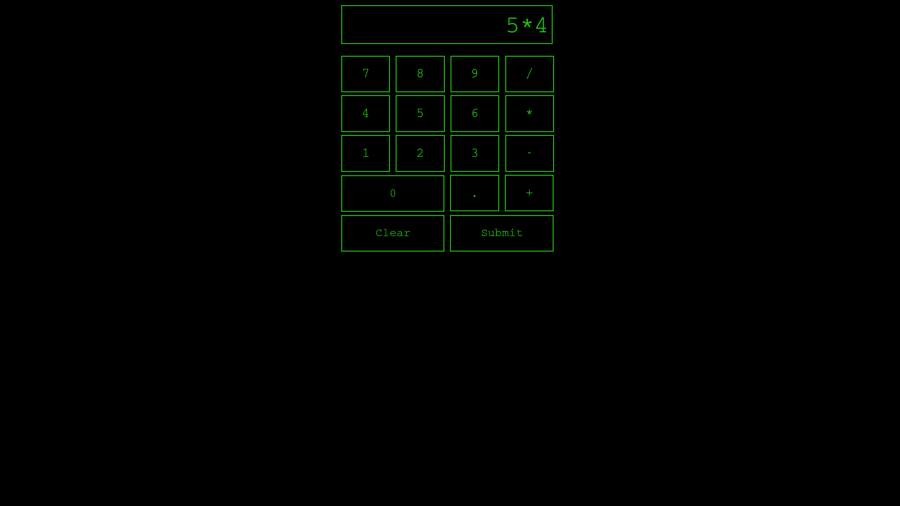
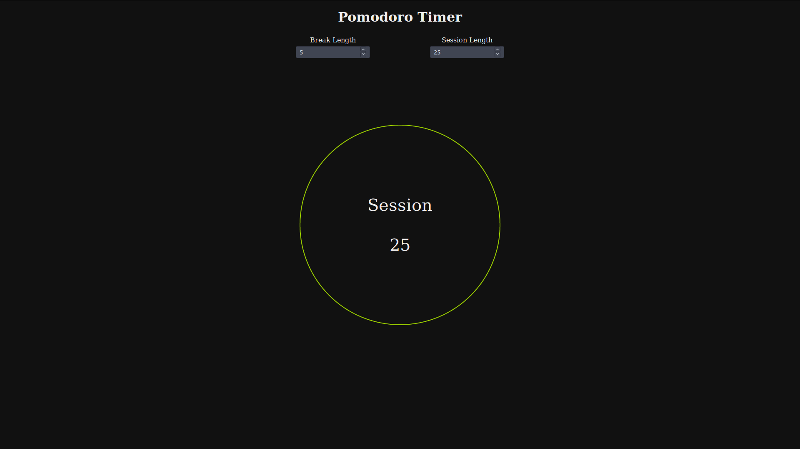
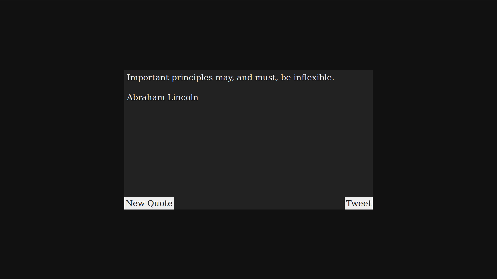
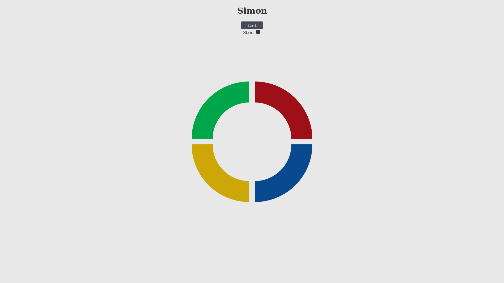
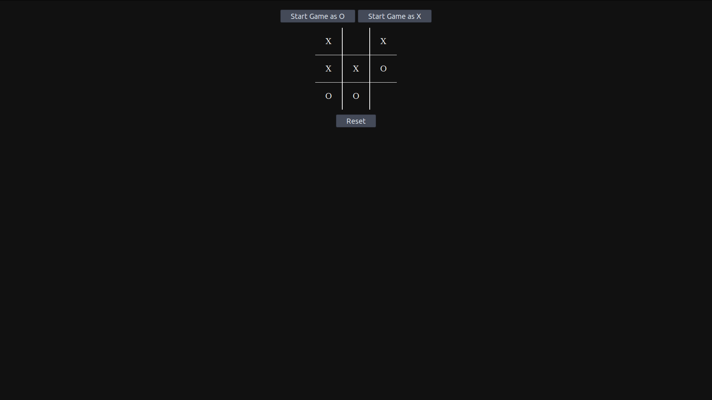
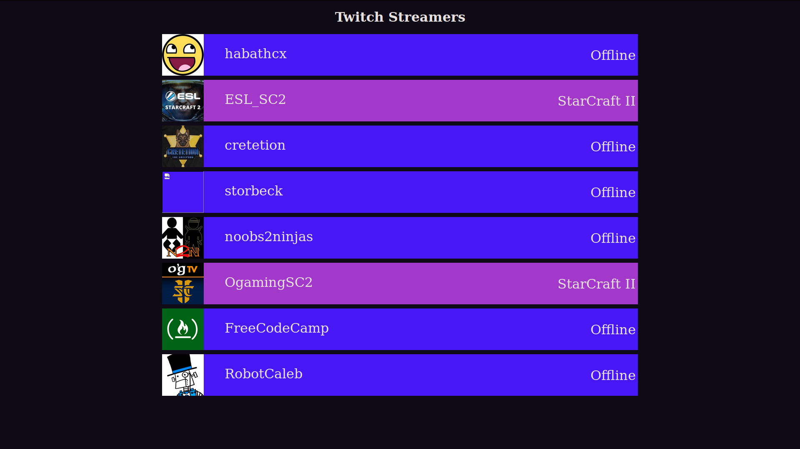
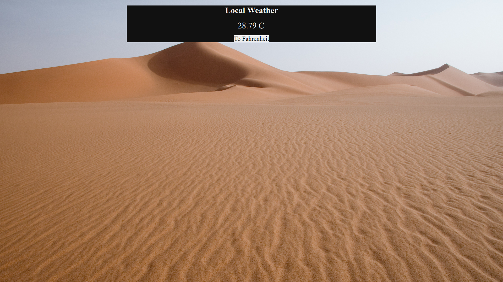
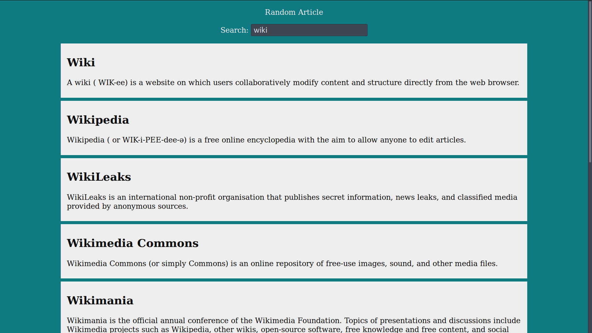

Projects
Below are a list of projects I have worked on with links to the source code on Github and descriptions of the projects. All projects can be found on my Github. Web-based projects can be found in the "Web Portfolio" section of this page.
HTTP Server
A simple Linux HTTP server. Distributes jobs to a fixed-size pool of worker threads. The default page is "index.html" in the directory where the server is called. Can send images, audio, and video. Written in C.
Markdown Converter
Converts a Markdown document (Github style) into either an html document or a latex file. Supports links and images. Written in Python.
Symbolic Differentiator
A symbolic differentiator. Uses the shunting-yard algorithm for parsing. Written in Java.
Image Viewer
An image viewer for viewing designed for viewing images as "galleries." Images can be scrolled either with the mouse or keyboard. The next image in a directory can be viewed by clicking the onscreen buttons or using the left and right arrow keys. The space bar can be used to scroll the image or to go the next image if the current image is unable to be scrolled further. The images are displayed in "Natural Order" (e.g. "2.png" comes before "10.png"). Scrolling uses a simple smooth scroll algorithm. Written in Java.
Image Editor
Simple image editor. Has tools for drawing lines and filling sections of the image based on surrounding colors. Written in Java.
Queue Simulator
A checkout queue simulator. Written in C++.
Linux Shell
A Linux shell. Written in C.
Raymond's Tools
A website containing a variety of tools and references that I have made. Examples of tools are a markdown editor, a html/LaTeX table generator, and a shade finder for css colors. Examples of references are a gdb quick reference, an x86 calling conventions reference, and an ascii chart.
Web Portfolio
Calculator
A basic calculator app. Can evaluate expressions, not just individual operations. Designed to look like an old terminal.
Pomodoro Timer
A pomodoro timer. When the "session" is over a break starts. Likewise, when the break is over a new session starts. The timer can be reset by clicking it. The lengths of both the session and the break timers can be customized. The timer is represented graphically by a green circle that turns red as it ticks down. This is drawn on an html5 canvas element.
Random Quote Machine
Uses the Forismatic API to retrieve and display a random quote. There is a button to display another quote and one to tweet the currently displayed quote, which uses Twitter's web intents.
Simon Game
A web version of the electronic game Simon. The game flashes the buttons in a random order and the user has to press the buttons in the same order. By default, if the player fails to do so, the game will flash the same sequence again and give them another chance. If the game is set to strict mode it will reset from the beginning if the player fails. Pressing the start button again will manually reset the game. The game displays the current level in the middle of the simon board. The game's interface is drawn using the html5 canvas element.
Tic-Tac-Toe Game
A web Tic-Tac-Toe game against a simple AI. The player can choose either to start as O (AI goes first) or as X (player goes first). The game will alert the player of the results when the game is over and reset the board so they can play again. The game can be manually reset as well.
Twitch API
Uses the Twitch API to retrieve and display information about a list of streamers. The information displayed includes the streamer's icon, the display id, and their status (either Offline or the game they or playing). Streamer that are online are identified with a different background color.
Local Weather
Uses the html5 geolocation feature and the Open Weather Map API to get the users local temperature. The background image changes depending on weather it is hot, cold, or mild. Can display in either Celsius or Fahrenheit.
Wikipedia Search
Uses the Wikipedia API to search for articles and display the results. Can also send the user to a random article (Wikipedia's Special:Random page).